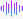
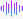

Nie wita samotności chlebem ani solą
Ona sobie jest
Nic nie musi robić
Sama się rozrosła w jego ogrodzie
Kwitnąc fałszywymi uśmiechami
Owocując obojętnością
Z każdym pobytem tam
Coraz bardziej go oplata
Aż nie może się bez niej obejść
Nazywa
Jest z nią
Patrzysz na nas spoza liści
grudzień 2025
 
